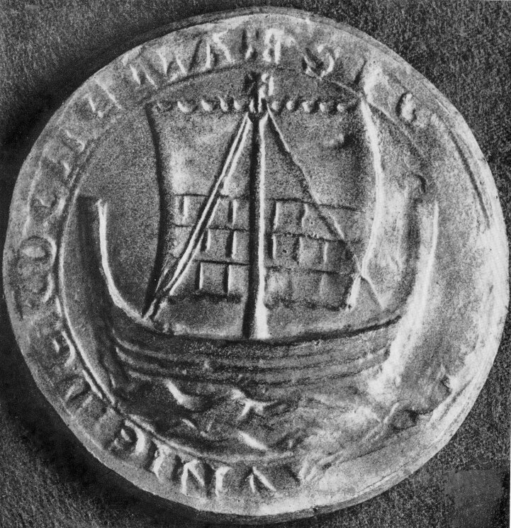
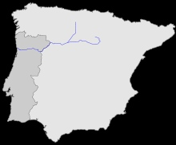
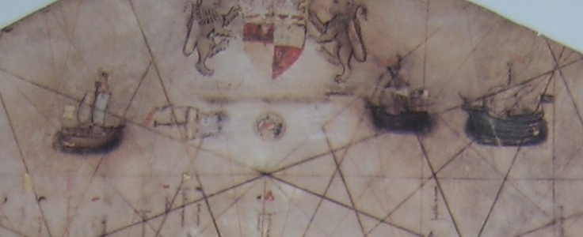

Хольки и коги
…но подумала ― стерпится слюбится
и привыкла к поверхности гладкой.
С.Кирсанов. Новые ощущения
Картина флорентийского художника Сандро Боттичелли «Суд Париса» (ок.1485) (Венеция, галлерея Джорджио Чини)
В прошлый раз мы сделали краткий обзор известных нам сведений о хольке, сейчас же попробуем разобраться в отдельных конкретных деталях устройства этого корабля и определить место, которое хольк занимал среди других парусных кораблей эпохи.
Немецкий исследователь Хайнсиус в упоминавшейся выше книге о кораблях ранней Ганзы писал, что конструкция средиземноморских парусных судов претерпела значительные изменения после знакомства с североевропейским когом в период крестовых походов. Мы ранее описали появление кога в бассейне Средиземного моря и дали общий обзор истории этого корабля. Основным отличительным признаком кога стал прямой парус на единственной мачте, что контрастировало с латинскими парусами местных судов. Интересным в этом отношении является отрывок из Славянской хроники Арнольда Любекского ((1171—1209)), в котором рассказано, что христианский пленник в Бейруте, наблюдая приближение флота к берегу, именно по прямым парусам (vela quadranguia) понял, что это идет спасение от рабства (запись на 1197 г, кн.V, гл.27).
Огюстен Жаль в своем Морском словаре приводит описание печати Ла Рошели (датировано 24 августа 12З2), которое нашли в документах генуэзского нотариуса. Для описания кога стряпчему достаточно упоминания одной мачты с распущенным прямым парусом («Cochae, cum arbore et vello quadrato expenso»)

Другими характерными признаками североевропейских когов была клинкерная (внахлест) конструкция корпуса, наличие навесного руля в диаметральной плоскости судна, полные обводы корпуса и плоское днище.
К слову, этнографы нашего времени установили, что граница между северным клинкером и южным (средиземноморским) карвелем (обшивка вгладь) проходит где-то в районе самой большой реки Португалии Дору (Douro, исп. Дуэро, Duero) .

В реках севернее этой границы до сих пор строят лодки в клинкер, а южнее – в карвель.
Конечно, ког на Средиземном море воспринял все характеристики своего северного собрата не вдруг, конструкция корабля менялась постепенно. Начиная с 1353 года в каталонских источниках появляются свидетельства о двухмачтовых когах.
На Адриатическом море ког отмечается с 1258 года, но строительство собственных когов венецианцы начинают с 1340-х годов, причем ведут его на верфях арсенала Рагузы, а не Венеции. В задании на постройку особо отмечается, что создание корпуса нового корабля необходимо начинать с возведения его каркаса, скелета из шпангоутов и продольных брусьев, и лишь затем накладывать на него обшивку. Так легче было заранее сформировать требуемые для кога характеристики: плоское днище и глубокий вместительный трюм. До этого момента корабли на Адриатике строили по-другому: сначала формировали форму корпуса досками обшивки, а затем уже вставляли внутрь укрепляющие его поперечные и продольные конструкции.
На построенный в Рагузе первый ког «Св. Николай» (Sanctus Nicolaus) после его спуска на воду были направлены конопатчики, чтобы подготовить корабль к первому плаванию в Левант. Этот факт свидетельствует о том, что корпус нового корабля был построен вгладь (карвель), так как при строительстве внахлест (в клинкер) уплотняющая мастика помещалась между досками обшивки в процессе набора корпуса, после установки каждого нового пояса обшивки. Последующие документы показывают, что хотя этот корабль называли navis quadra, он имел также мачту с типично средиземноморским латинским парусом. Изображения появляются на картах того времени, в том числе на известном портулане Баттисты Беккарио 1426 года.

На карте показаны три судна с прямым парусным вооружением, причем один из них – правый – имеет бизань с латинским парусом.
Тот факт, что корпуса когов на Средиземном море делались не в клинкер, а в карвель, находит свое подтверждение и в работах крупных живописцев того периода.
На картине Боттичелли, приведенной в начале поста, ясно виден корабль, проходящий кренование для восстановления уплотнения швов, что характерно именно для кораблей, корпуса которых набраны в карвель. Очевидно, что процедура кренования предъявляет повышенные требования к прочности корпуса, поэтому требовались усиленные продольные поясья обшивки (вельсы) и поперечные (к направлению обшивки) брусья (фендерсы), которые мы и наблюдаем на изображениях средиземноморских кораблей того периода.
Постепенно метод постройки корпуса в карвель, встык, вгладь начинал продвигаться к северу от Бискайского залива, достиг верфей Англии, атлантического побережья Франции и Северной Европы. Основным проводником этой новой технологии стали «генуэзские каракки», восемь из которых, находящихся на французской службе, Англия захватила в 1416-1417 гг.
(Мы подробно опишем процесс перехода от клинкера к карвелю в последующих постах, сейчас ограничимся лишь этим кратким обзором, чтобы не отвлекаться от нашей темы, связанной с хольками.)
Победное шествие технологии постройки корпуса в карвель привело к тому, что в Англии, например, между 1500 и 1510 гг. в строю не было уже кораблей клинкерной постройки (см. Daniel Zwick , «Bayonese cogs, Genoese carracks, English dromons and Breton carvels», 2011). Дело дошло до того, что когда в 1545 году на Темзе были задержаны несколько больших германских кораблей, известных как “clenchers” , которые направили в Портсмут для возможного использования на королевской службе, Lord High Admiral отказался принять их, так как корабли были непригодны для службы в военном флоте из-за малой крепости корпуса. Но на Балтике продолжали нести службу хольки, корпуса которых был набран в клинкер. Флот Любека в 1509-1510 гг. включал в себя не только каравеллы, но и хольки (hollicks). Хольки являлись синонимом больших кораблей клинкерной постройки. Такая же картина отмечалась и в шведском флоте, где под командование короля Густава Васа ходили не только любимые им kravels , но и крупные holcs. Но и в том царстве клинкера стали появляться корабли, где поверх обшивки внакрой клали второй слой досок, уже вгладь. Постепенно корабельный состав практически всех европейских флотов в течение XVI века отошел от клинкера, хотя в некоторых регионах, таких как Финляндия, старая технология еще долго сопротивлялась. Она была пригодна для постройки купеческих судов, но для военных кораблей – губительна. Технические трудности и значительное ослабление прочности корпуса при прорезании пушечных портов в бортах, набранных внакрой, вынуждали размещать пушки на верхней палубе , а это грозило катастрофическим повышением центра тяжести корабля и угрозой его опрокидывания уже при небольшом волнении и ветре.
Продолжение последует.